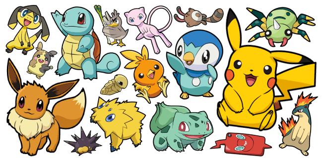
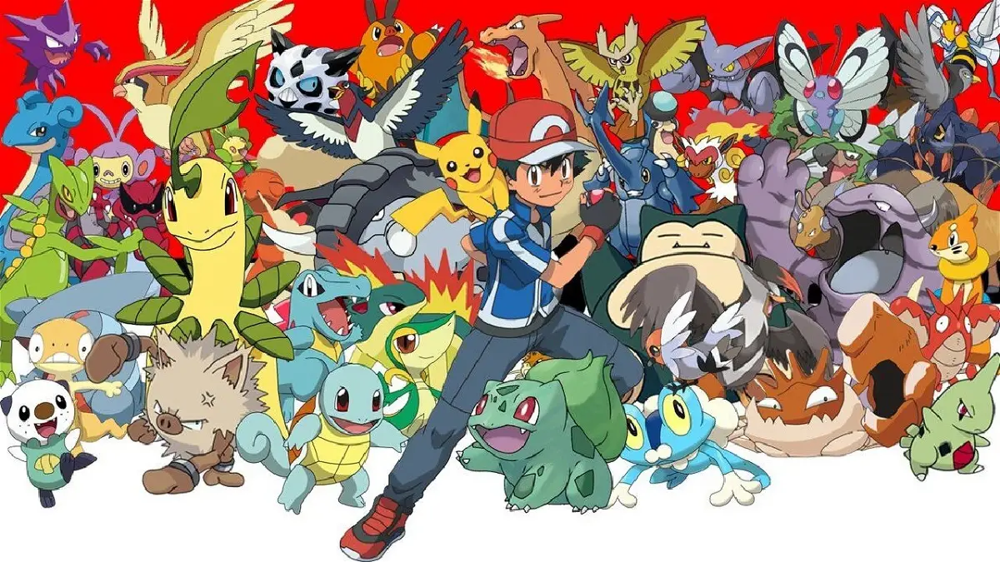
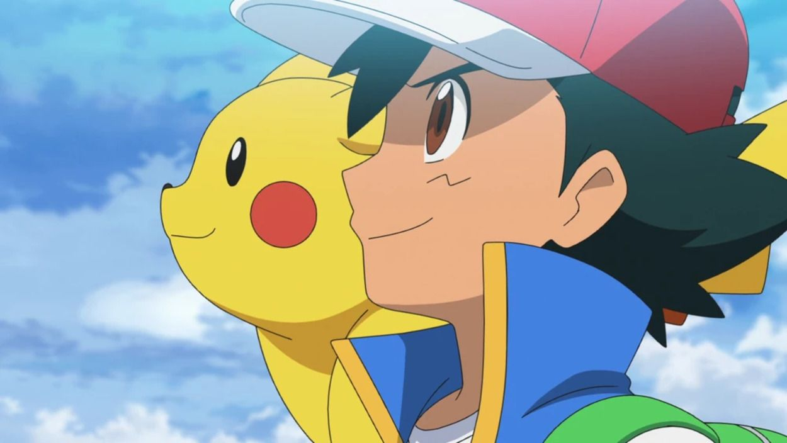

TRAMA:
La historia de Pokémon se remonta a la década de 1990 cuando el diseñador de videojuegos japonés Satoshi Tajiri ideó la idea de Pokémon. La palabra "Pokémon" proviene de la combinación de dos palabras japonesas: "pocket" (bolsillo) y "monsters" (monstruos), refiriéndose a los pequeños monstruos que los jugadores pueden capturar y llevar en sus bolsillos. La primera generación de juegos, Pokémon Rojo y Verde (más tarde lanzados como Pokémon Rojo y Azul en Occidente), fue lanzada en Japón en 1996 para la consola Game Boy de Nintendo. La trama de los juegos originales sigue a un joven entrenador Pokémon, el jugador, que emprende un viaje para convertirse en el Campeón de la Liga Pokémon al derrotar a los líderes de gimnasios y la Élite 4. A lo largo del camino, el jugador se enfrenta al malvado Equipo Rocket, cuyos miembros intentan explotar a los Pokémon para sus propios fines. El éxito de los juegos llevó a la creación de una serie de anime, que debutó en Japón en 1997 y en el resto del mundo poco después. El anime sigue las aventuras de Ash Ketchum (Satoshi en Japón), un joven entrenador Pokémon, y su leal compañero Pikachu, mientras viajan, conocen a otros entrenadores y enfrentan desafíos.
La serie sigue las aventuras de un impetuoso y joven entrenador llamado Ash Ketchum, y de Pikachu, su compañero Pokémon, mientras viajan por el mundo Pokémon visitando destinos exóticos, conociendo a montones de personas y Pokémon nuevos e interesantes, y viviendo muchas y emocionantes aventuras
La historia de Pokémon se remonta a la infancia de Satoshi Tajiri (1965), diseñador japonés de videojuegos, quien nació en Machida, prefectura de Tokio, en un Japón todavía rural; cuando era niño, le encantaba explorar entre la hierba alta en bosques, lagos y pantanos, en la búsqueda de insectos, los cuáles